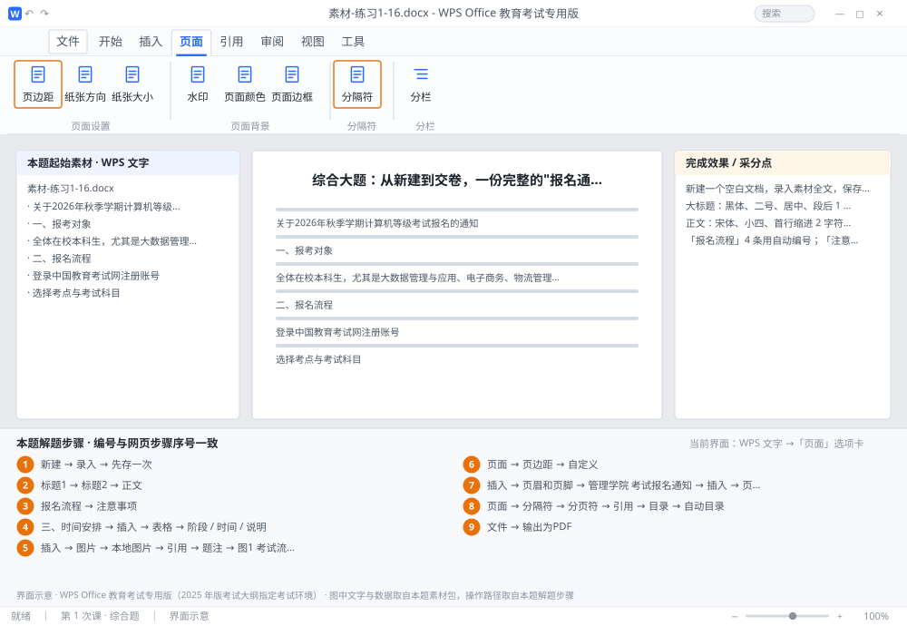

完成比对文档 · 综合题
综合大题：从新建到交卷，一份完整的"报名通知" ｜ 第 1 次课 / WPS 文字 ｜ 网页：入门实操课.html ｜ 考试环境：WPS Office 教育考试专用版（2025 年版考试大纲指定考试环境）
用途 本页按修订后的题目要求与解题步骤生成，是交卷自查的结果基准：
逐项列出每一步应出现的可复核结果，配合模拟操作截图与解题结果文件使用。
它不是素材包的一部分，不会预置答案动作；起始素材仍从本题素材包下载。
一、本题起始素材包
目录：练习素材/练习1-16-报名通知综合题/ ｜
下载包：练习素材/下载/练习1-16-报名通知综合题.zip
二、题目要求
- 新建一个空白文档，录入素材全文，保存为 学号-姓名-综合.docx。
- 大标题：黑体、二号、居中、段后 1 行；三个小标题套用「标题2」样式。
- 正文：宋体、小四、首行缩进 2 字符、1.5 倍行距。
- 「报名流程」4 条用自动编号；「注意事项」3 条用项目符号。
- 在「时间安排」下插入 4 行 3 列表格，表头浅灰底纹加粗居中，全表所有框线，表格居中。
- 插入一张图片，四周型环绕、宽 6 厘米，图注「图1 考试流程示意图」。
- 页面：A4、页边距上下 2.54 厘米、左右 3.17 厘米。
- 页眉「管理学院 考试报名通知」居中，页脚「第 X 页」居中。
- 在正文最前面插入自动目录（单独一页），并更新域。
- 输出同名 PDF。
三、解题步骤（编号与下方核对表、截图编号一致）
- 新建 → 录入 → 先存一次。Ctrl+N 新建，录入全文（表格和图先留位置），立刻 F12 另存为 学号-姓名-综合.docx。先存盘再排版——这是考场上最重要的一条纪律。
- 套样式。大标题套「标题1」并改样式：黑体、二号、居中、段后 1 行；三个小标题套「标题2」。正文全选后套「正文」，再改样式为宋体小四、首行缩进 2 字符、1.5 倍行距。
- 编号与符号。「报名流程」4 条套自动编号 1~4；「注意事项」3 条套 • 项目符号。
- 插表格。光标放到「三、时间安排」下一行 →「插入」→「表格」→ 4 行 3 列 → 录入「阶段 / 时间 / 说明」等 → 表头底纹浅灰 + 加粗 + 居中 → 全表所有框线 → 表格属性里设整表居中、列宽 3/4/7 厘米。
- 插图片。「插入 → 图片 → 本地图片」→ 选图 →「图片工具 → 环绕 → 四周型」→ 宽 6 厘米 → 居中 → 下方用「引用 → 题注」加图注「图1 考试流程示意图」，宋体五号居中。
- 设页面。「页面」→ 纸张 A4、纵向 →「页边距 → 自定义」→ 上下 2.54、左右 3.17 厘米 → 应用于整篇文档。
- 设页眉页脚。「插入 → 页眉和页脚」→ 页眉输入「管理学院 考试报名通知」，宋体五号居中 → 页脚「插入 → 页码」选「第 X 页」样式，宋体小五居中。
- 插目录。光标放到大标题之前 → 按 Enter 空出一页（或用「页面 → 分隔符 → 分页符」）→ 光标在新页首行 →「引用」→「目录」→「自动目录」→ 生成后点「更新目录」→ 选 更新整个目录。
- 收尾。通读一遍：目录页码与实际是否一致（变了就 Ctrl+A 后按 F9 更新域）→ Ctrl+S → 「文件 → 输出为PDF」存到同一文件夹 → 打开 PDF 快速翻一遍。
四、完成效果 / 采分点
按上述题目要求逐项完成，成稿与网页「完成效果」及解题步骤一致。
五、逐项完成核对表
| 步骤 | 关键操作路径 | 应出现的结果（可复核） |
|---|
| 1 | 新建 → 录入 → 先存一次 | F12、学号-姓名-综合.docx |
| 2 | 套样式 | 「标题1」、1 行、「标题2」、「正文」、2 字符 |
| 3 | 编号与符号 | 「报名流程」、「注意事项」 |
| 4 | 插表格 | 「三、时间安排」、「插入」、「表格」、4 行、「阶段 / 时间 / 说明」 |
| 5 | 插图片 | 「插入 → 图片 → 本地图片」、6 厘米、「引用 → 题注」、「图1 考试流程示意图」 |
| 6 | 设页面 | 「页面」、A4、「页边距 → 自定义」、3.17 厘米 |
| 7 | 设页眉页脚 | 「插入 → 页眉和页脚」、「管理学院 考试报名通知」、「插入 → 页码」、「第 X 页」 |
| 8 | 插目录 | 「页面 → 分隔符 → 分页符」、「引用」、「目录」、「自动目录」、「更新目录」 |
| 9 | 收尾 | F9、「文件 → 输出为PDF」 |
六、模拟操作截图

界面示意 · WPS Office 教育考试专用版 · 橙色编号与本题解题步骤序号一致；
图中文字与数据取自本题素材包，功能入口取自本题解题步骤。
核对方法：按网页解题步骤完成并另存自己的成稿后，逐行比对本表第 3 列的
参数、公式、区域、文件名与对象数量；再对照网页「完成效果 / 采分点」检查版式是否一致。